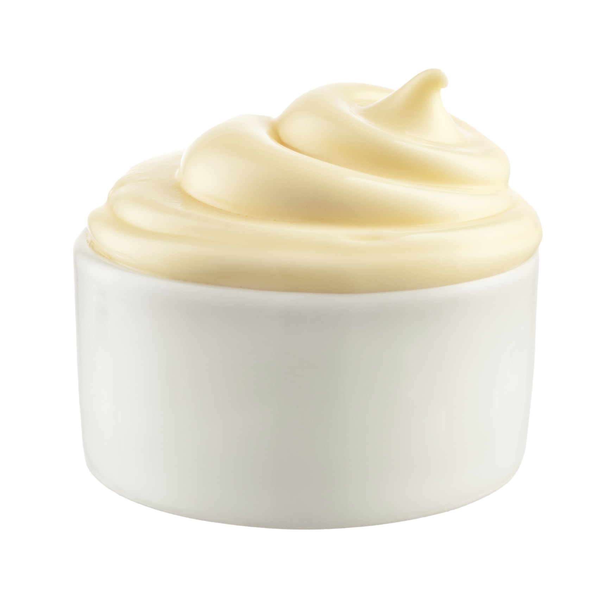

MAYONNAISE

RESEP:
- 2 butir kuning telur
- 1/2 sdt merica
- 1/2 sdt garam
- 2 sdm perasan lemon
- 250 ml minyak sayur
- 50 ml air es
|
CARA MEMBUAT:
- Siapkan wadah lalu masukkan kuning telur, merica, garam dan perasan lemon kemudian aduk hingga merata
- Setelah itu masukkan minyak sayur sedikit demi sedikit kedalam wadah tersebut dan diaduk dengan kecepatan sedang hingga mengental (kamu juga bisa menggunakan mixer listrik untuk mempercepat proses)
- Setelah mengental tambahkan air es kedalam wadah lalu aduk kembali hingga merata
- Jika sudah, masukkan mayonnaise kedalam wadah dan simpan di kulkas selama kurang lebih 15 menit.
- Mayonnaise siap disajikan sebagai pelengkap hidangan kamu!
|